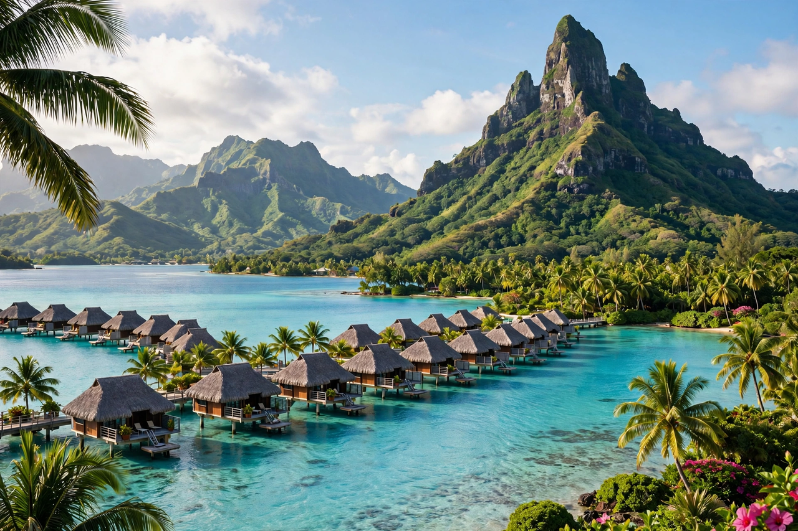

French Polynesia is an overseas collectivity of France in the South Pacific, comprising 121 islands and atolls across five archipelagos — the Society Islands (including Tahiti), Tuamotu, Marquesas, Gambier and Austral Islands. Its capital is Papeete on Tahiti. Population is about 280,000, most living on Tahiti.

| French Polynesia | |
|---|---|
| Status | Overseas collectivity of France |
| Capital | Papeete |
| Languages | French, Tahitian |
| Currency | CFP franc (XPF) |
| Population | ~280,000 |
Polynesian voyagers settled the islands over a millennium ago. Europeans arrived from the 16th–18th centuries (Wallis, Bougainville, Cook). France made Tahiti a protectorate in 1842 and annexed it in 1880, gradually incorporating the other archipelagos. From 1966 to 1996 France conducted 193 nuclear tests at Moruroa and Fangataufa atolls, a lasting source of controversy and health claims. Autonomy statutes (1984, 2004) devolved many powers, and in 2013 the UN reinscribed French Polynesia on its list of non-self-governing territories.
The islands are a mix of high volcanic islands and low coral atolls scattered over an ocean area the size of Western Europe, with total land of about 3,500 km². Tourism (Bora Bora, Moorea), black pearl farming, fishing and French transfers dominate the economy.
Culture blends Polynesian traditions — dance (ʻori Tahiti), tattooing, outrigger canoe racing such as the Hawaiki Nui Va'a — with French language and institutions. Languages include Tahitian, Marquesan and Tuamotuan.